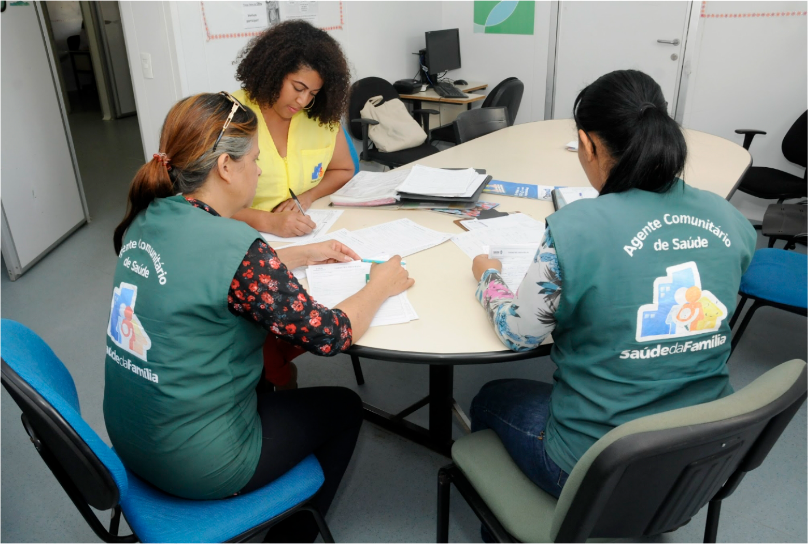

3. Mapeando mecanismos indutores do trabalho colaborativo
Para a implementação de estratégias de reorientação de processos que caminhem na direção do trabalho integrado entre equipes de uma UBS, é importante refletirmos sobre iniciativas que possam concretamente ser indutoras de mudanças sustentáveis.
Existem mecanismos com o potencial de conduzir as equipes para o agir colaborativo. Reconhecer essas possibilidades pode ser um facilitador para a implementação de medidas que visem ao alcance do processo de trabalho integrado. Aportes de diferente natureza podem oferecer suporte aos gestores nesse processo. Alguns talvez se encontrem disponíveis para serem incorporados na rotina do trabalho, enquanto outros podem já estar inseridos nos processos, devendo ser apenas potencializados.